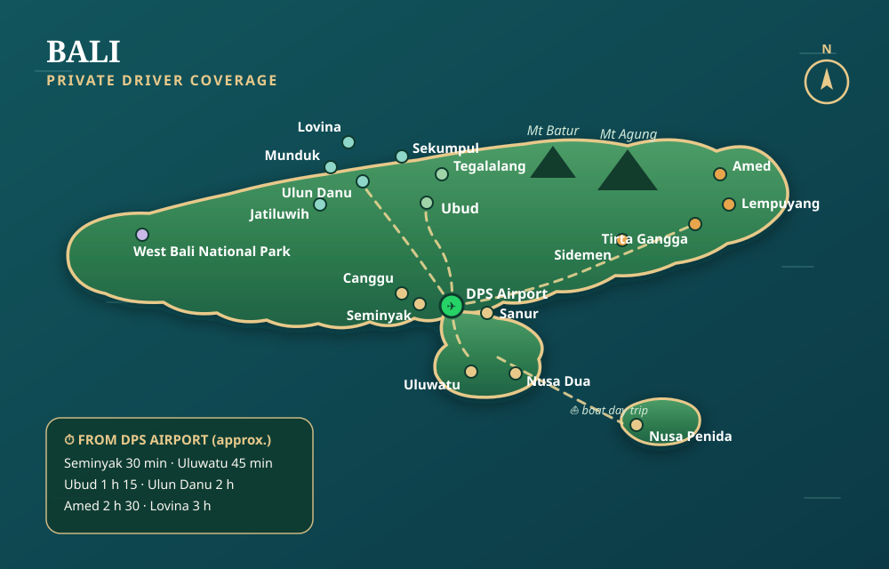

✈️
Трансферы из аэропорта
Встреча в аэропорту Нгурах-Рай (DPS) с табличкой с вашим именем. Прямая комфортная поездка в отель или на виллу в любой точке Бали — днём и ночью, с отслеживанием рейса.
Местный водитель · Напрямую · Без комиссий
Здравствуйте, я Кетут — балийский водитель с опытом более 20 лет. Обходитесь без агентств и их комиссий: бронируйте меня напрямую для трансферов из аэропорта, однодневных экскурсий и многодневных поездок — в комфортабельной машине с кондиционером.
Или напишите мне напрямую: +62 818‑0556‑8096

Ваш водитель
Я Кетут, родился и вырос на Бали. Уже более 20 лет я показываю свой остров путешественникам со всего мира — молодожёнам, семьям с детьми, компаниям друзей.
Двадцать лет на этих дорогах — это больше, чем знание маршрута: я знаю, в какой час у храма Лемпуянг нет очереди, где готовят лучший баби гулинг, какие просёлочные дороги объезжают пробки и как выстроить день так, чтобы никуда не спешить.
Я вожу аккуратно, всегда пунктуален и с удовольствием рассказываю по дороге о балийской культуре, храмах и повседневной жизни. Со мной вы получаете не просто трансфер — а местного друга за рулём.
Мои услуги
Встреча в аэропорту Нгурах-Рай (DPS) с табличкой с вашим именем. Прямая комфортная поездка в отель или на виллу в любой точке Бали — днём и ночью, с отслеживанием рейса.
Машина + водитель в вашем распоряжении до 10 часов. Бензин и парковки включены. Маршрут выбираете вы — храмы, водопады, рисовые террасы, пляжи — или я предложу свой.
От одной экскурсии до полного тура вокруг острова на несколько дней: вместе спланируем маршрут, логистику отелей и места вдали от туристических толп.
Идеи для ваших дней
 Убуд и рисовые террасы
Убуд и рисовые террасы
Террасы Тегалаланг, Лес обезьян, дворец и рынок Убуда, водный храм Тирта Эмпул, кофейная плантация.
 Улувату и южное побережье
Улувату и южное побережье
Храм Улувату на скале, огненный танец кечак на закате, пляжи Паданг-Паданг и Меласти, ужин из морепродуктов в Джимбаране.
 Восток Бали и «Врата рая»
Восток Бали и «Врата рая»
Храм Лемпуянг («Врата рая»), водный дворец Тирта Гангга, Таман Уджунг, чёрные песчаные пляжи Чандидасы.
 Водопады севера
Водопады севера
Водопады Секумпул или Гитгит, храм на озере Улун Дану Братан, ворота Хандара, рисовые террасы Джатилуви (ЮНЕСКО).
Все экскурсии на 100 % частные, маршрут полностью настраивается — комбинируйте остановки как хотите. Просто скажите, что вы мечтаете увидеть.
 2 дня
2 дня
Рассвет у «Врат рая» до прихода толп, Тирта Гангга, затем тихая ночь среди рисовых долин Сидемена. Бали таким, каким он был раньше.
 3 дня
3 дня
Южные скалы и закат в Улувату, сердце Убуда и его террасы, затем северные озёра, водопады и Джатилуви. Все главные места — без спешки.
 4+ дней
4+ дней
Национальный парк на западе Бали, туманные горы Мундука, снорклинг в Амеде, день на лодке на Нуса-Пениде… Назовите даты — и мы вместе составим полный маршрут.
Куда я могу вас отвезти

Время в пути указано приблизительно и зависит от трафика. Где бы вы ни остановились, я вас заберу — а на Нуса-Пениду легко организовать однодневную поездку на скоростной лодке.
Прозрачные цены
IDR 250K в одну сторону, от
IDR 450K до 5 часов, от
IDR 700K до 10 часов, от
IDR 650K в день (от 3 дней), от
Цены включают машину, водителя, бензин и парковки. Точная стоимость зависит от расстояния и маршрута — спросите меня в WhatsApp, это ни к чему не обязывает. Входные билеты и питание не включены.
Агентства и приложения добавляют 20–40 % комиссии к ставке водителя. Бронируя напрямую, вы платите меньше — а я получаю честную оплату.
Никаких колл-центров. Вы пишете мне — я отвечаю. Мы вместе планируем маршрут ещё до вашего прилёта на Бали.
Рейс задержали? Хотите подольше остаться у водопада? Никаких жёстких графиков и платы за изменения — мы просто подстраиваемся.
Простое бронирование
Без предоплаты и онлайн-платежей. Вы платите Кетуту напрямую.
Полезно знать
Просто напишите мне в WhatsApp на +62 818-0556-8096: даты, место подачи и ваши пожелания. Я сразу подтвержу доступность и цену. Предоплата не требуется.
Целый день (до 10 часов: машина + водитель + бензин + парковки) стоит от примерно 700 тыс. IDR в зависимости от маршрута. Трансферы из аэропорта — от 250 тыс. IDR, многодневные туры — от 650 тыс. IDR в день. Точную цену вы всегда узнаёте в WhatsApp до бронирования.
Я говорю по-английски и по-индонезийски. В WhatsApp автоматический перевод позволяет легко общаться по-русски — за 20 лет работы я привык находить общий язык с гостями со всего мира.
Конечно. Я отслеживаю ваш рейс, встречаю в зале прилёта с табличкой с вашим именем и помогаю с багажом — даже при ночных прилётах.
Да, машина современная, с кондиционером, комфортно вмещает до 5–6 пассажиров с багажом. Для больших групп напишите мне в WhatsApp — организую подходящий автомобиль.
Обязательно — многодневные туры я люблю больше всего. Помогу составить маршрут (рассвет на востоке, северные озёра, Мундук, Амед и другое), отвезу от отеля к отелю, а программу будем корректировать день за днём. От 3 дней действует сниженная дневная ставка.
Напишите мне прямо сейчас — обычно я отвечаю в течение нескольких минут.
WhatsApp +62 818‑0556‑8096